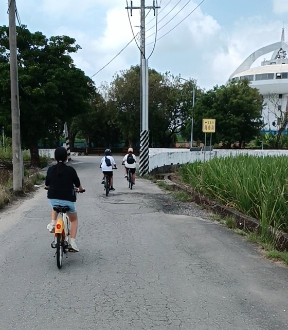
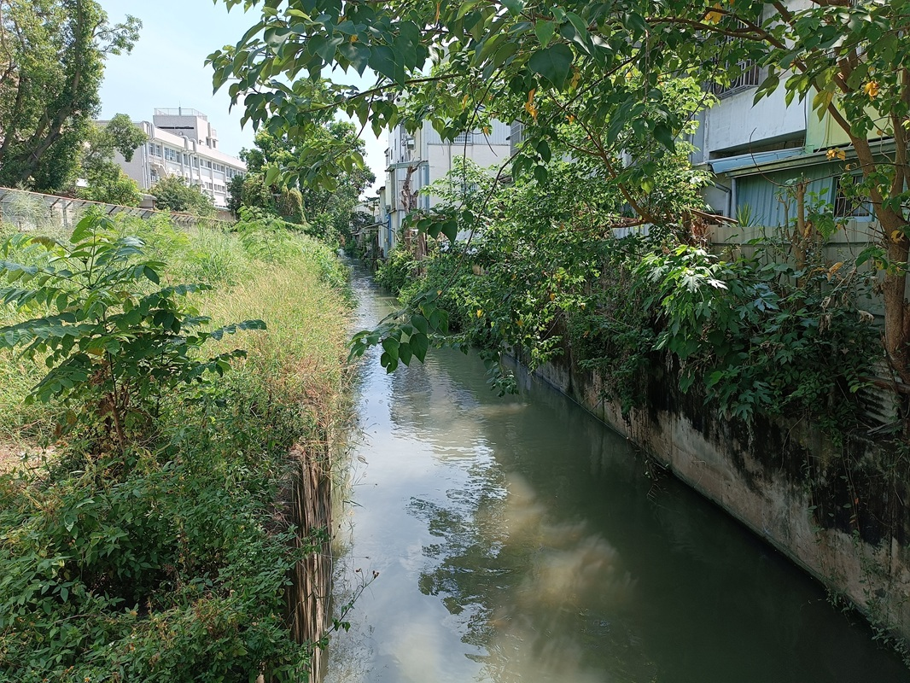
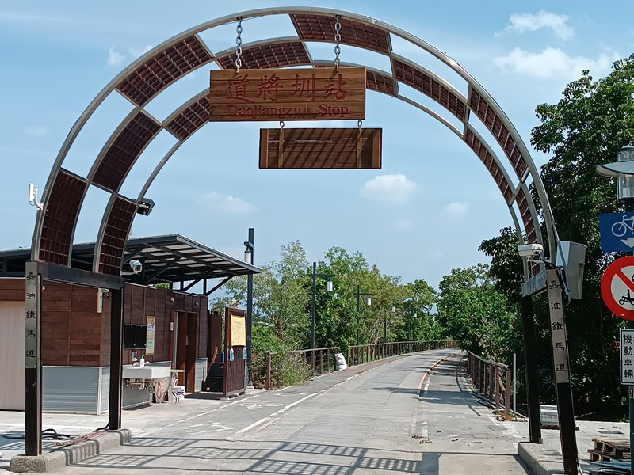
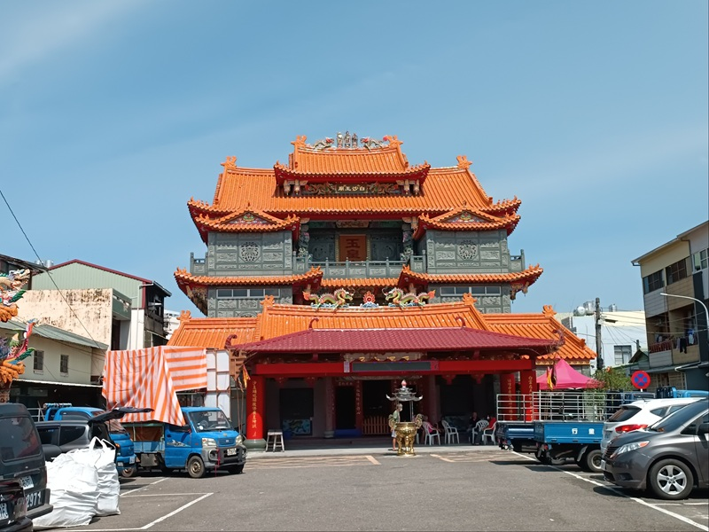
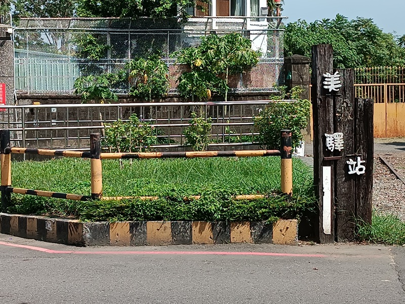

實地走讀：探索生態與人文的交會點
我們的走讀旅程，是沿著水圳從源頭八掌溪取水口，一路延伸至水上鄉的太陽館，親身感受道將圳與嘉義城市、農田、自然的共生關係。

起點：八掌溪的生命之源
道將圳的生命之源。我們在此觀察取水口設施、攔水壩結構及水流狀況，了解水圳如何從八掌溪穩定引水灌溉。這座精巧的水利設施是嘉義農業發展的基石，見證了先民與自然搏鬥的智慧。
沿線觀察：從城市到田園的景觀變遷
沿著鐵馬道前行，我們記錄了水圳與城市發展的互動。從嘉義市區的景觀綠化、休憩步道，到郊區與農田的交界，水圳兩岸的生態系統豐富而多樣，展現了水圳作為生態廊道的重要性：
- **生態景觀：** 觀察岸邊樹木、水生植物，以及小魚、水鳥等棲息情況，體認到水圳是重要的生態廊道。
- **休憩空間：** 記錄了沿線的橋樑、校園、公園與鐵馬道，這些綠色空間為居民提供了絕佳的休閒場域。
- **環境反思：** 走訪中也發現了垃圾丟棄、外來種入侵等問題，讓我們深刻體會到環境保育的迫切性。

沿著水圳前行：從鐵馬道感受水圳的陪伴與城市景觀
道將圳之美：沿線風景攝影集



